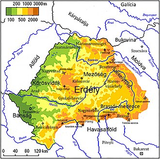

|
Erdély gazdag történelmi és természeti kincseiről híres régió,
amely számoslenyűgöző látványosságot kínál az idelátogatóknak. A festői
hegyvidékek, mint a Fogarasi-havasok vagy a Székelyföld dombjai kiváló
túrázási lehetőséget nyújtanak.Történelmi városai – például Kolozsvár,
Brassó és Nagyszeben – középkori hangulatot árasztanak, szűk utcáikkal
és gótikus templomaikkal. Nevezetességek közé tartozik a híres
Törcsvári kastély, amelyet Drakula váraként is emlegetnek, valamint a
Gyilkos-tó és a Békás-szoros. Erdély valódi kincsesbánya mindazok számára,
akik szeretik a természetet, a történelmet és a sokszínű kultúrát.
|